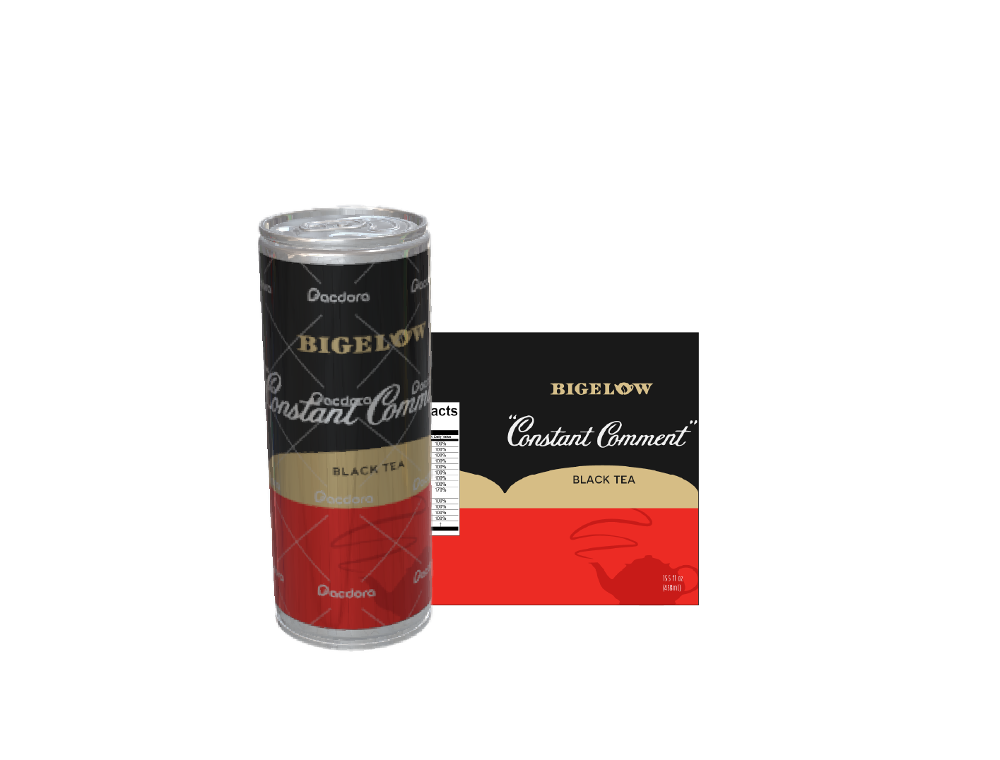
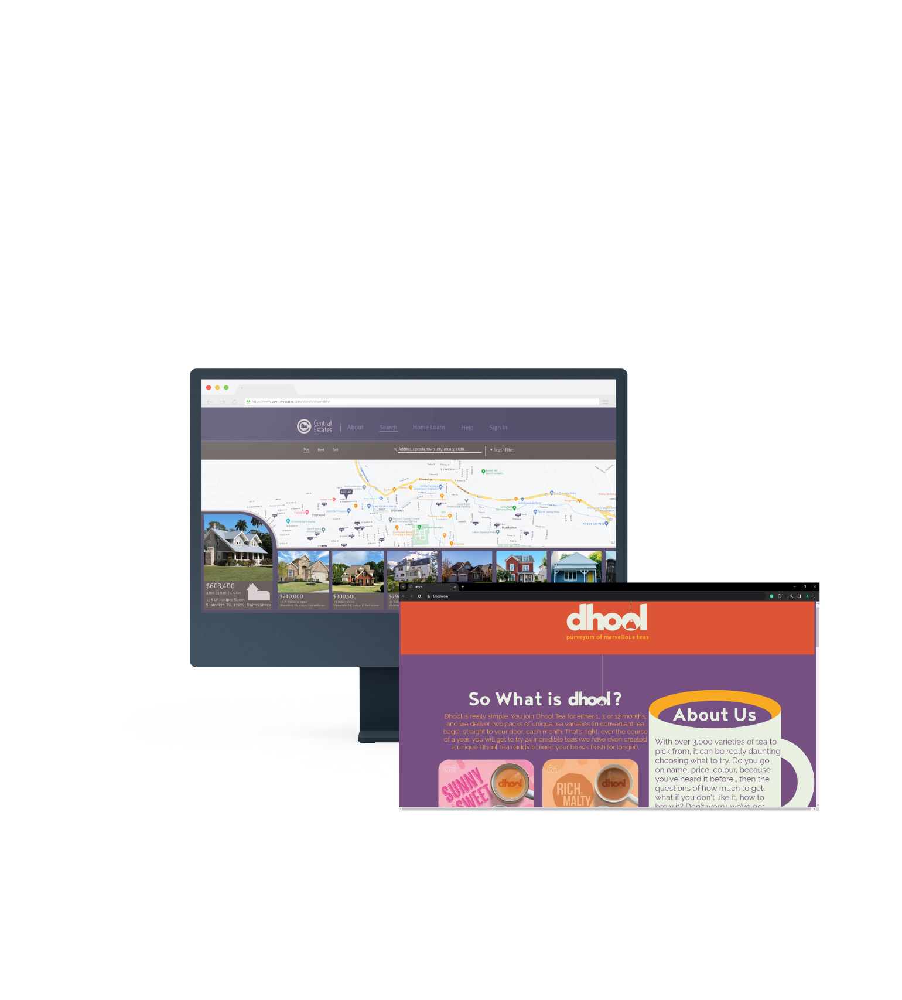

My passion for design began when I embarked on my journey as a CAD drafter, where I quickly gained expertise in the use of the AutoDesk suite. During my sophomore year of high school, I secured an internship at JE Good Consulting Engineers, where I honed skills in working with panelboards and lighting fixtures using the sophisticated vector-based software AutoCAD. Building upon this foundational experience, I continued to pursue my passion for design at Millersville University, where I am currently a senior studying Graphic and Interactive Design.
Designs




Spreads
Mockups
Stickers
Web